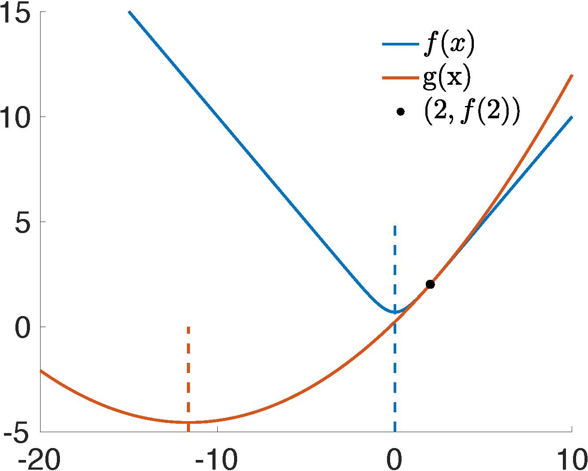

In addressing the minimization problem presented by implicit Euler time integration (referenced in Equation (2.1.1)), employing Newton's method (outlined in Algorithm 1.5.1) is a viable strategy for the resultant system of nonlinear equations. This involves setting the gradient of the Incremental Potential Energy to zero:
∇E(x)=0.
However, the application of this method to cases such as nonlinear elasticity, particularly in the Neo-Hookean model, does not always guarantee convergence. The presence of truncation errors, especially in scenarios involving large time steps or significant deformations, can adversely affect the convergence process.
Example 3.1.1 (Illustration of Newton's Convergence Issue).
To elucidate the issue of Newton's method non-convergence, let's consider a one-dimensional minimization problem characterized by the objective function:
f(x)=ln(e−x+ex).
We can evaluate the function at x=2 and approximate it using a quadratic energy g(x), which is defined as:
g(x)=f(2)+f′(2)(x−2)+21f′′(2)(x−2)2.
The joint plot of f(x) and g(x) (Figure 3.1.1) distinctly exhibits that the next iteration would exceed the actual target, landing at a point (x=−11.645) further from the actual solution at x=0. The subsequent iterations amplify this deviation, leading to a trajectory that diverges. It's worth noting that this demonstration involves a convex function f(x)=ln(e−x+ex). The problem can become even more complex when Newton's method is applied to non-convex elasticity energies.

Figure 3.1.1. An iteration of Newton's method for minxE(x)=ln(e−x+ex) at x=2.
Remark 3.1.1 (Convexity of Energies). Convex functions are characterized by symmetric and positive-definite (SPD) second-order derivatives throughout their domain. Conversely, the energy in most models of nonlinear elasticity used in computer graphics is rotation invariant. This implies that the energy value remains unchanged regardless of the rotational orientation of objects or elements. Such rotation invariance leads to non-convexity, making the optimization process more complex.
Definition 3.1.1 (Symmetric Positive-Definiteness).
A square matrix A∈Rn×n is symmetric positive-definite if
A=AT, and
vTAv>0 for all v∈Rn,v=0.
Unlike directly solving nonlinear equations, a minimization problem provides an energy measure that enables the assurance of global convergence using a technique called line search.